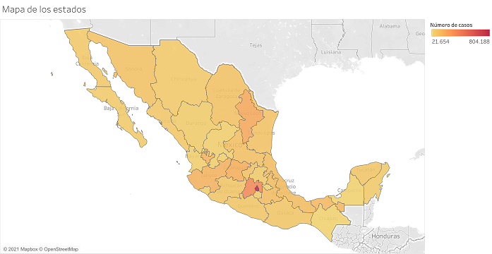

Análisis de datos del Covid 19 en México
Este proyecto consiste en un análisis estadístico sobre los datos de la pandemia de Covid 19 en la ciudad de méxico. Así como de un dashboard interactivo con los datos de todo el país.
Luis Alberto Macías Barrales
Analista y Científico de Datos
Análisis de datos para generar conocimiento, ya sea social o de negocio. Creación de reportes
Entrenamiento y evaluación de algoritmos de aprendizaje automatizado.
Creación de tableros interactivos para presentación, divulgación y análisis de datos de interés.
Análisis de la base de clientes, con el proposito de generar conocimiento sobre los posibles objetivos de negocio.
Análisis de datos de redes sociales, para generar conocimiento de tendencias.
Creación de kpi's para generar conocimiento de negocio.
Este proyecto consiste en un análisis estadístico sobre los datos de la pandemia de Covid 19 en la ciudad de méxico. Así como de un dashboard interactivo con los datos de todo el país.
Este proyecto consistió en un análisis de mi cuenta personal de Twitter y de un artículo para el blog Tacos de Datos.

Participe en el reto 30 days of machine learning, auspiciado por el portal Kaggle. Este reto estuvo compuesto de dos partes:
Consistió de varios cursos para introducir a gente nueva en el área de la ciencia de datos.
Competencia para aplicar los conocimientos adquiridos en la primera parte del reto. Consistió en un problema de regresión.
Mi nombre es Alberto Macías. Por ahora, me encuentro terminando una maestría en matemáticas en la UNAM y también me estoy preparando como científico de datos de manera autodidacta.
Como científico de datos, me interesa el análisis de datos con el fin de adquirir nuevos conocimientos apartir de ellos. Soy entusiaste de la visualización de datos, el big data, el procesamiento del lenguaje natural y del machine learning.
Mis conocimientos en temas de programación abarcan, como principiante, Pyhon y R. Además, poseo conocimientos de html, SQL y visualización de datos en Tableau. También me interesa aprender en algún momento temas sobre desarrollo de videojuegos, de los cuales soy aficionado.
Mi área de especialidad como matemático es la topología algebraica, particularmente en la teoría de homotopía, aunque también soy un entusiasta del álgebra conmutativa, la geometría algebraica, la estadística y, sobre todo, la teoría de categorías. Mi tesis de licenciatura la realié sobre el toerema de Dold-Kan (un teorema de gran importancia para varias áreas de la topología, la geometría algebraica y el álgebra homológica) y puede ser consultada (con muchos typos) aquí. Mi tesina de maestría es sobre la sucesión espectral de Leray-Serre y por el momento se encuentra en derarrollo, pero pronto podrá ser consultada aquí.
Fuera del mundo de las matemáticas y los datos, me considero un devorador de libros, particularmente de novelas y cuentos, aunque también me gusta la poesía y el ensayo lírico. A veces escribo reseñas en Goodreads. También me gusta escribir, de forma casual. Otro de mis grandes intereses es la música. Soy apasionado del rock y el heavy metal, pero disfruto también del hiphop, el reguetón, el pop, el jazz, el soul y muchos más géneros.